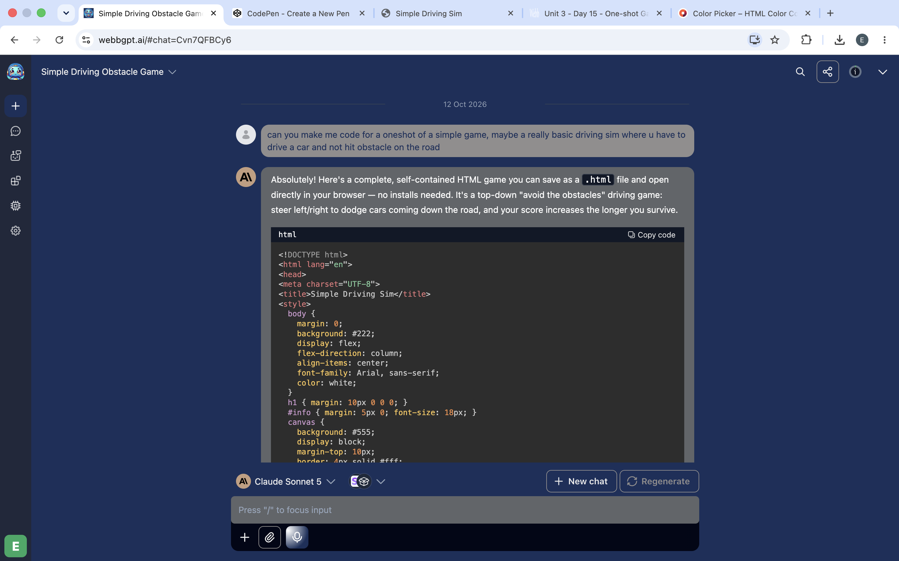
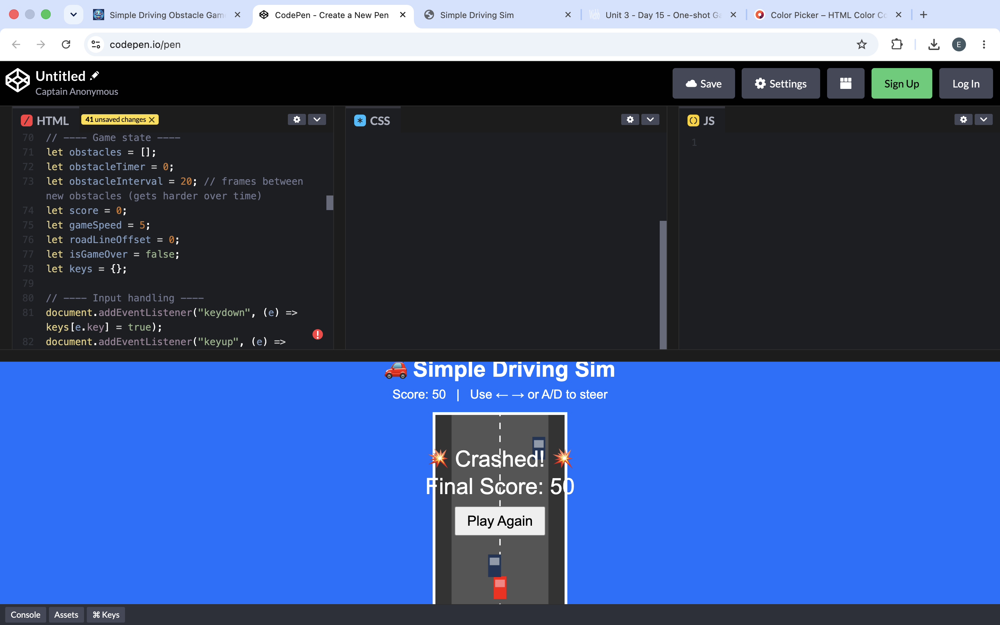
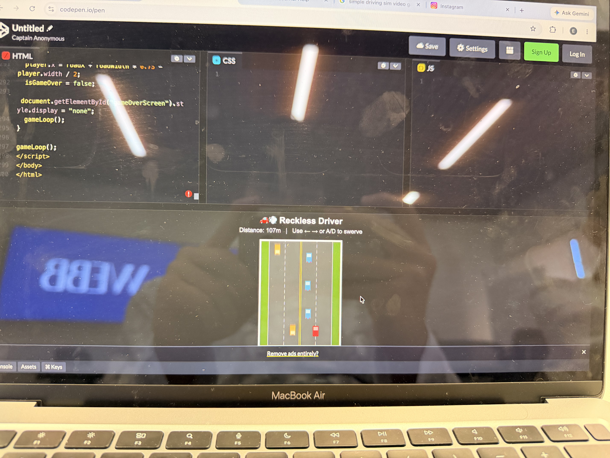
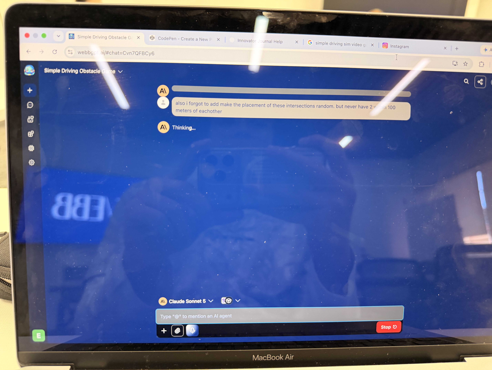
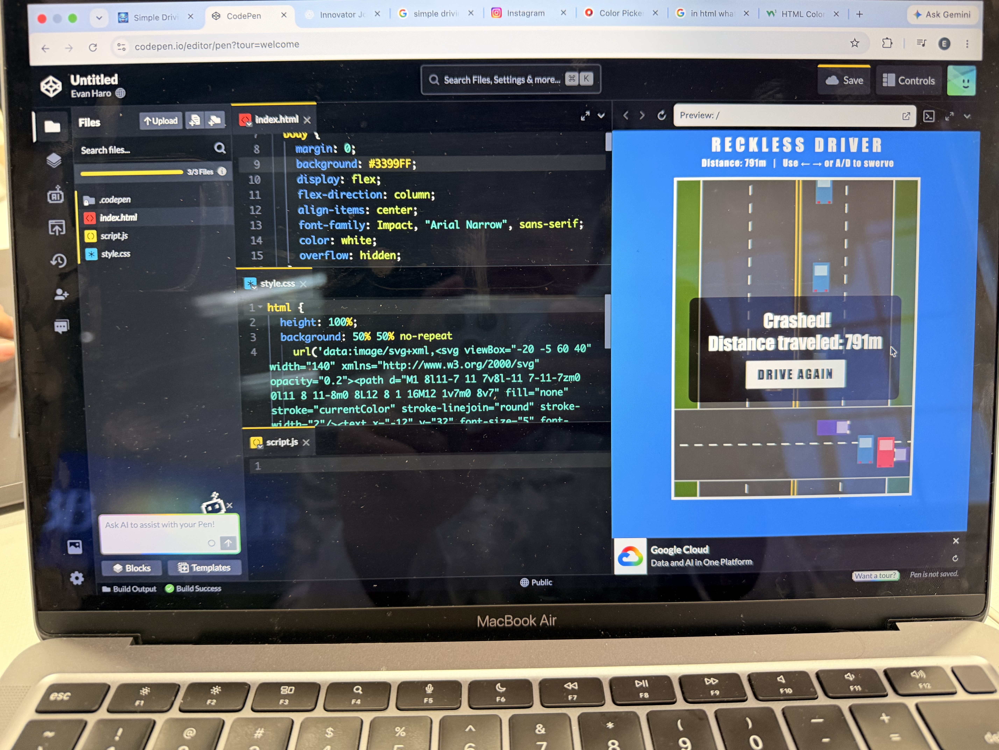
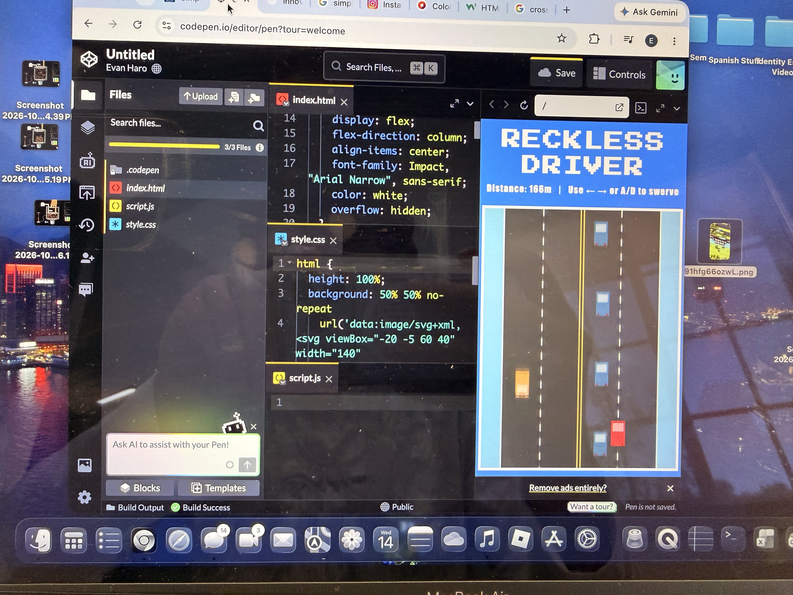

One-Shot Game and Autopsy
Innovator Journal | Planning, Goal Setting, and Game Development
Day 1: Creating the Driving Game
1. Project Overview
For this project, I used AI to help create a simple driving simulation. The original idea was to drive a car and avoid obstacles on the road. I wanted to make a game that was easy to understand but still challenging to play.
2. Planning and Goal Setting
My initial goal was to create a basic driving game where the player could control a car and avoid obstacles. I wanted to understand how the game worked and learn how to make changes to the code instead of only relying on the AI to create everything.
My plan was to start with a working version of the game, test it, and then identify areas I could improve. This gave me a starting point for learning how the code controlled the gameplay and visuals.
3. My Original Prompt
I used the following prompt to ask AI to create my game:
Can you make me code for a oneshot of a simple game, maybe a really basic driving sim where u have to drive a car and not hit obstacle on the road

4. First Version of the Game
After using the AI-generated code, I had a playable driving game called Reckless Driver. The player could move between lanes to avoid other cars and try to travel as far as possible without crashing.

5. Autopsy and Reflection
Looking at the first version helped me understand what was already working and what I wanted to improve. The basic gameplay was there, but the road and cars looked simple, and the experience could become repetitive.
I realized that I could build on the original game instead of starting over. I wanted to learn more about the code by changing different parts, testing the results, and fixing problems when something did not work as expected.
My main takeaway from Day 1 was that AI could help me get a starting point, but I still needed to make decisions about the design, test the game, and improve it based on my goals.
Day 2: Improving the Driving Game
1. Adding Two-Way Traffic and Improving the Cars

I started by making the gameplay more interesting. I added two-way traffic so that cars could travel in both directions, making the road feel more like an actual road. I also polished the car sprites and made other improvements to the gameplay.
These changes helped the game feel less like a basic obstacle-avoidance game and more like a driving simulation. I wanted the visuals and the gameplay to work together to make the experience more realistic.
2. Adding Random Intersections

After working on the traffic, I wanted to add more variety to the roads. I asked the AI to add intersections at random locations. I also specified that two intersections should never be within 100 meters of each other.
My goal was to make each run less predictable and give the player a road layout that felt more varied instead of repeating the same design.
3. Testing the Intersections

After making the changes, I checked how the intersections appeared in the game. This let me see how the new road layouts worked alongside the existing traffic.
Adding intersections was another step toward making the driving environment feel more realistic. It also gave me a chance to see how adding a new feature could change the overall appearance and experience of a game.
4. Changing the Visual Style

Toward the end of class, I started experimenting with the display size and the game's visual style. I changed the font to a more blocky, pixelated style to give the game a stronger retro-game appearance.
However, while I was changing the styling, the grass unexpectedly turned blue. I had to go back into the code and adjust the styling to fix the issue. This reminded me that changing one part of a project can sometimes cause unexpected changes elsewhere.
5. Reflection and Next Steps
During Day 2, I made progress toward my goal of making the driving game feel more like real-life roads. I added two-way traffic, improved the car sprites, experimented with random intersections, and started changing the game's visual style.
I also learned that developing a game involves testing changes and troubleshooting problems. When the grass turned blue, I had to investigate the styling instead of assuming every change would work perfectly.
Moving forward, I want to continue improving the road layouts and car visuals while making sure the gameplay still works correctly. I also want to keep learning how the code works so I can make more changes myself and better understand the results.